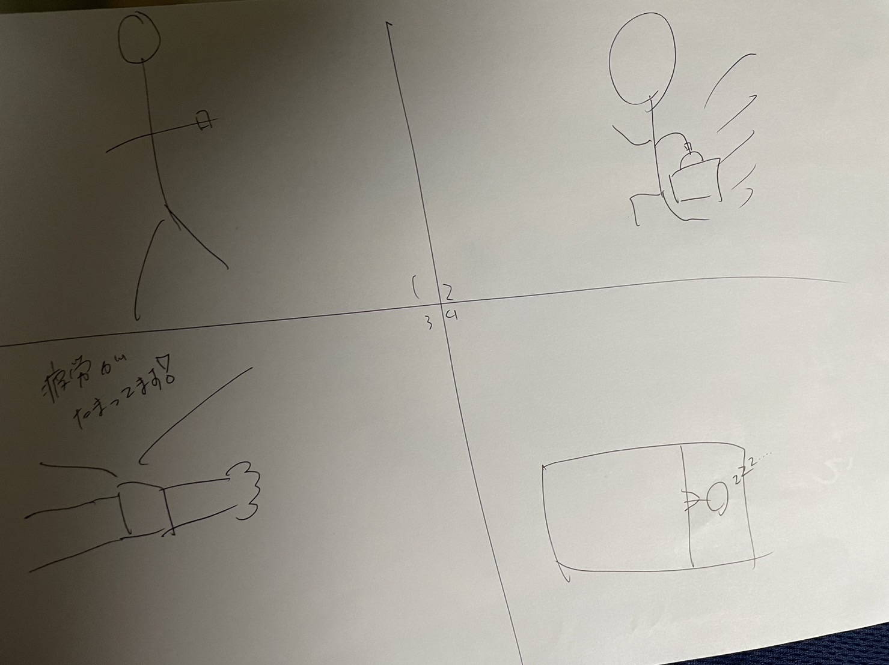

班の意見ではチャットGDPを使いながらまずIotのセンサーで何があるのかを調べました。
そして、加速度センサー、超音波、液面、動体、磁気、屈曲など色々なセンサーがあげれました。
ですが、センサーの名前と何をするセンサーなのかわからなく、すこし違うものもあります。
超音波の内容についてはたくさんの意見が出ました。
自分のアイデア

腕時計型の、健康を管理するものです。つけている人の脈や体内の状況をデータ管理し、
数値が高くなったり、低くなったりしたときに異常を知らせ、事故や体調の急変を未然に防ぐ
といったものになります。